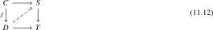
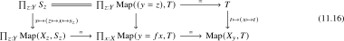

Definition 11.5.1. Let \(f\colon C\to D\) be a functor between categories.
• For any \(n\geq 0\), the functor \(f\) is called surjective on \(n\)-cells
• for \(n= 0\), if the induced map \(f\colon C^\simeq \to D^\simeq\) on objects is a cover;
• for \(n\geq 1\), if for every pair \(x,x':C^\simeq\) the induced map \(C(x,x') \to D(fx,fx')\) is surjective on \((n-1)\)-cells.
• For any \(-1\leq n\leq \infty\), the functor \(f\) is called \(n\)-surjective if it is surjective on \(k\)-cells for all \(0\leq k\leq n\). (Note that this is vacuous for \(n=-1\)).
• For any \(-2\leq n<\infty\), the functor \(f\) is called \(n\)-connected if it is left orthogonal to all \(n\)-truncated functors; i.e., if for every solid commutative square of the form

where \(S\to T\) is \(n\)-truncated, there is a unique dashed lift as indicated.• The functor is called \(\infty\)-connected if it is \(n\)-connected for all \(n\).
Remark 11.5.2. If \(f\colon X\to Y\) is a functor between animae, then surjectivity on \(0\)-cells is just surjectivity; for \(n\geq 1\), the map \(f\) is surjective on \(n\)-cells if and only if the diagonal \(\Delta_f\colon X\to X\times_Y X\) is surjective on \((n-1)\)-cells. It follows directly from the definition that being surjective on \(n\)-cells is a fiberwise condition.
Lemma 11.5.3. Let \(n\in \mathbb{Z}_{\geq -2}\) and let \(f\colon X\to Y\) be a map of animae. The following are equivalent:
(1) \(f\) is \((n+1)\)-surjective.
(2) For every \(n\)-truncated map \(S\to Y\), the map \begin{equation} \prod_{y:Y}S_y\to \prod_{y:Y}\Map(X_y,S_y),\quad s\mapsto (y\mapsto x\mapsto s_y) \tag{11.13}\end{equation} is an equivalence.
(3) For every \(n\)-truncated map \(S\to Y\) and every \(y : Y\), the map \begin{equation} S_y \to \Map(X_y, S_y), \quad s\mapsto (x\mapsto s) \tag{11.14}\end{equation} is an equivalence.
(4) For every \(n\)-truncated anima \(T\) and every \(y:Y\), the map \begin{equation} T \to \Map(X_y, T), \quad t\mapsto (x\mapsto t) \tag{11.15}\end{equation} is an equivalence.
Proof
First we prove that the three conditions 2, 3, and 4 are equivalent. The implications \(\text{4}\Rightarrow\text{3}\) and \(\text{3}\Rightarrow\text{2}\) are easy: for the first, simply choose \(T\coloneq S_y\) and for the second take the dependent product over \(y:Y\).
For the implication \(\text{2}\Rightarrow\text{4}\),
fix \(y:Y\) and an \(n\)-truncated anima \(T\),
and define the family
\(S\to Y\) by \(S_z\coloneq \Map((y=z),T)\).
Each \(S_z\) is \(n\)-truncated because \(T\) is.
Moreover, we have a commutative square

Next we prove the implication \(\text{1}\Rightarrow\text{4}\). Since both conditions are fiberwise we may assume that \(Y=*\), so that we must show that \begin{equation} c\colon T\to \Map(X,T), \quad t\mapsto (x\mapsto t) \tag{11.17}\end{equation} is an equivalence for every \((n+1)\)-surjective \(X\) and \(n\)-truncated \(T\). For \(n=-2\), both \(T\) and \(\Map(X,T)\) are contractible. For \(n=-1\), both sides are propositions; since \(X\) is merely inhabited, evaluation at a merely chosen point gives an inverse to \(c\). Now let \(n\geq 0\). By induction assume that we have proved the statement for \(n-1\). We show that \(c\) is a surjective embedding:
• Embedding: For each \(s,t : T\) we need to show that the map \begin{equation} s=t \to \Map(X, (s=t)), \quad(p \mapsto (x\mapsto p)) \tag{11.18}\end{equation} is an equivalence. Since \(s=t\) is \((n-1)\)-truncated and \(X\) is in particular \(n\)-surjective, this follows from the induction hypothesis (in context \(s,t : T\)).
• Surjectivity: Choose a point \(x_0 : X\) (allowed, because \(X\) is \(0\)-surjective and we are proving a proposition). Let \(r\colon X\to T\). We claim that we have an equality \(c(r(x_0))=r\), i.e., that for each \(x : X\) we have \(rx_0=rx\). For each \(x : X\) consider the map \begin{equation} (rx_0=rx) \to \Map(x_0=x, (r x_0 = rx)), \quad p \mapsto (q\mapsto p) \tag{11.19}\end{equation} Since the anima \(r x_0 = rx\) is \((n-1)\)-truncated and \(x_0=x\) is \(n\)-surjective, by induction this map is an equivalence. Since the right side has an object (the action of \(r\) on equalities), so does the left.
It remains to show that the equivalent conditions 2, 3, and 4 jointly imply 1. Since conditions 4 and 1 are fiberwise, we may assume that \(Y=*\). We again argue by induction on \(n\). The case \(n=-2\) is automatic.
For arbitrary \(n\geq-1\), take \(T\coloneqq \truncation{-1}{X}\) to obtain the equivalence \begin{equation} \truncation{-1}{X}\xrightarrow{\simeq}\Map(X,\truncation{-1}{X}) \tag{11.20}\end{equation} The canonical map \(X\to \truncation{-1}{X}\) on the right then gives a proof on the left that \(X\) is merely inhabited, i.e. \(0\)-surjective.
Now let \(n\geq 0\). We must show that all identity animae \(x=_Xz\), for \(x,z:X\), are \(n\)-surjective. We will show that for each \(x : X\), the map \(x \colon *\to X\) satisfies condition 2 for \(n-1\); by induction this implies that its fibers are \(n\)-surjective which is what we need.
Fix \(x:X\), and let \(p\colon S\to X\) be \((n-1)\)-truncated. Choose a universe in which \(p\) has small fibers and consider it as a map \(S\colon X\to \An_{\leq n-1}\). Here \(\An_{\leq n-1}\) denotes the anima of \((n-1)\)-truncated animae in the chosen universe. It is \(n\)-truncated by univalence, so we can apply condition 4 with \(T\coloneq \An_{\leq n-1}\) to obtain that the map \begin{equation} c\colon \An_{\leq n-1} \to \Map(X, \An_{\leq n-1}) \tag{11.21}\end{equation} is an equivalence. In particular, \(S\) is equivalent to a constant family \(z\mapsto S_0\) for some \((n-1)\)-type \(S_0\), i.e., \(S\simeq S_0\times X\) over \(X\).
Thus the map in (11.13), applied to \(x:*\to X\), is the restriction \(\prod_{z:X}S_z\to S_x\). Under this identification of \(S\) with the constant family \(S_0\), it becomes the evaluation map \begin{equation} \ev_x\colon \Map(X,S_0) \to S_0 \tag{11.22}\end{equation} Since evaluation is a retraction of the constant-map equivalence (11.17), supplied by condition 4 with \(T=S_0\), it is an equivalence, thus concluding the proof.
Corollary 11.5.4. Let \(f\colon X\to Y\) be a map of animae and \(n\in \mathbb{Z}_{\geq -2}\). The following are equivalent:
(1) The map \(f\) is \((n+1)\)-surjective.
(2) The map \(f\) is an \(n\)-approximation.
(3) The map \(f\) is \(n\)-connected.
Proof
“1 \(\iff\) 2”: Using condition 2 of Lemma 11.5.3, this is exactly Lemma 11.4.5.
“1 \(\iff\) 3”: When the map \(Y\to T\) is an equivalence, the unique lifting statement (11.12) is exactly the equivalence (11.13) from Lemma 11.5.3; the general case can always be reduced to this case by pulling back along \(Y\to T\), because \(n\)-truncated maps are closed under base change.
Remark 11.5.5. For categories, a \((n+1)\)-surjective functor need not be \(n\)-connected. For example, the functor \(\{0,1\}\to [1]\) is \(0\)-surjective and \((-1)\)-truncated, but is not orthogonal to itself (i.e., not an isomorphism).
Lemma 11.5.6 (Closure properties of \(n\)-connected maps). Let \(n\geq -2\). The collection of \(n\)-connected maps of animae is closed under:
• base change
• composition
• colimits
• precancellation: If \(gf\) and \(f\) are \(n\)-connected, then so is \(g\).
Proof
Base change follows from being fiberwise (Remark 11.5.2), composition, colimits and precancellation follow from the characterization as left orthogonal maps.
Lemma 11.5.7. Let \(A\) be an \(n\)-connected anima. Then its suspension \(\Sigma A \coloneq * \amalg_A *\) is \((n+1)\)-connected.
Proof
We use condition 4 of Lemma 11.5.3. Let \(A\) be \(n\)-connected; we must show that for each \((n+1)\)-truncated anima \(T\) the map \begin{equation} T \to \Map(\Sigma A, T)= \Sigma_{t_0,t_1 : T}\Map(A,t_0=t_1), \quad t \mapsto (t,t,a \mapsto \refl_t) \tag{11.23}\end{equation} is an equivalence. This map is the composite \begin{equation} T\xrightarrow{t\mapsto (t,t,\refl_t)} \Sigma_{t_0,t_1} (t_0=t_1) \xrightarrow{\Sigma_{t_0,t_1}(p\mapsto a \mapsto p)} \Sigma_{t_0,t_1} \Map(A,t_0=t_1) \tag{11.24}\end{equation} of two equivalences: the left one formally, and the right one because \(A\) is \(n\)-connected and each \(t_0=t_1\) is \(n\)-truncated.
Corollary 11.5.8. For each \(n\geq -1\), the \(n\)-sphere \(S^n\), defined inductively via \begin{equation} S^{-1}\coloneq \emptyset \quad\text{and}\quad S^{n}\coloneq \Sigma S^{n-1}, \tag{11.25}\end{equation} is \((n-1)\)-connected.
Proof
The empty set is (vacuously) \((-2)\)-connected, thus the claim follows by induction using Lemma 11.5.7.
Lemma 11.5.9. Let \(n\geq -1\) and \(A\) be \(\infty\)-connected. Then every map \(f\colon S^n\to A\) is merely constant.
Proof
We prove the statement by induction on \(n\). For \(n=-1\) choose \(a\in A\); then every map \(\emptyset= S^{-1}\to A\) is vacuously homotopic to \(\const_a\). In the induction step consider a map \(f\colon S^{n+1}= \{0\}\amalg_{S^n}\{1\}\to A\), which amounts to the data of \(f0,f1\in A\) and a map \(f'\colon S^n\to f0=f1\). Since the anima \(f0=f1\) is still \(\infty\)-connected, there merely exists a trivialization \(f'\colon S^n\to \{p\}\xrightarrow{p} (f0=f1)\), which means that \(f\) factors as \(f\colon S^{n+1}\to \{0\}\amalg_{\{p\}} \{1\} \to A\), thus trivializing it.